Apunta la cámara al fruto. AgroCam encierra cada mango y te avisa si ve posibles signos de daño. Guarda la foto y el lugar exacto, aunque no tengas señal.
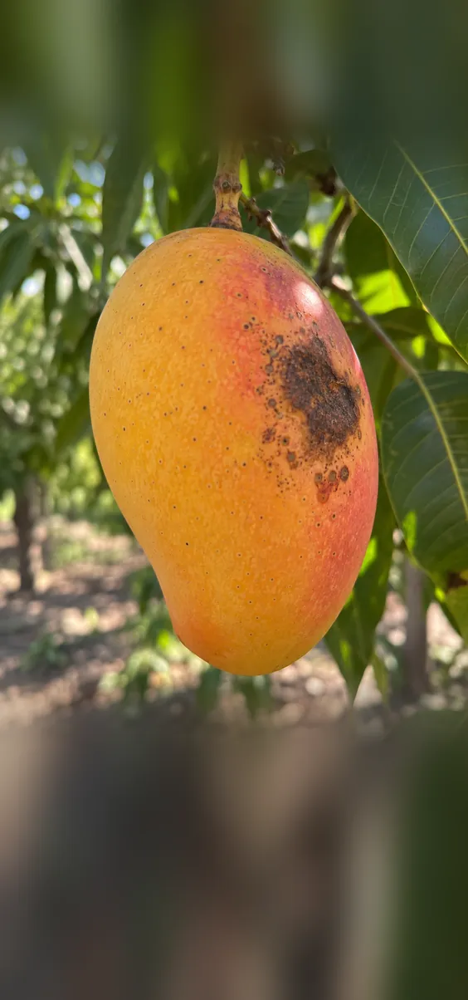
Mantén el teléfono quieto
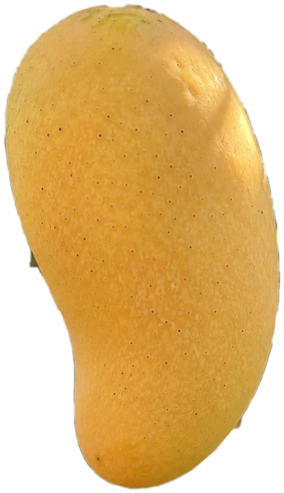
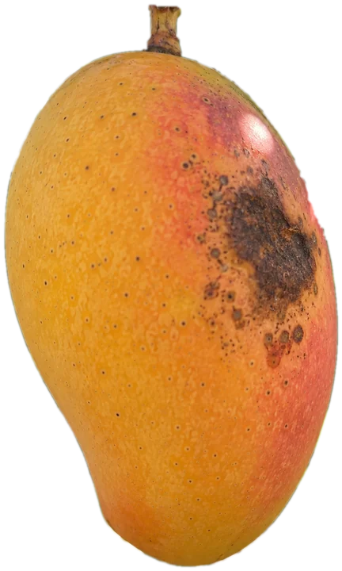
Antes de tomar la foto ya sabes cómo lo ve la app. Toca el mango que quieras revisar y espera a que el recuadro se quede quieto: entonces se activa el botón.
No es un diagnóstico. La app solo compara lo que ve en la cáscara.
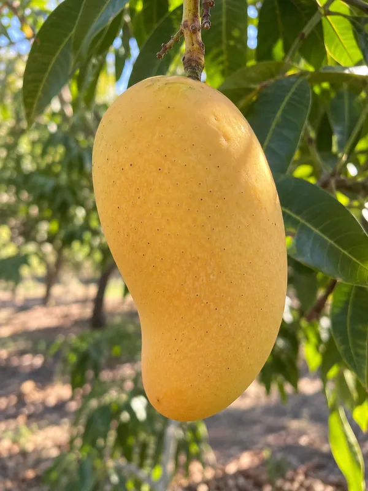
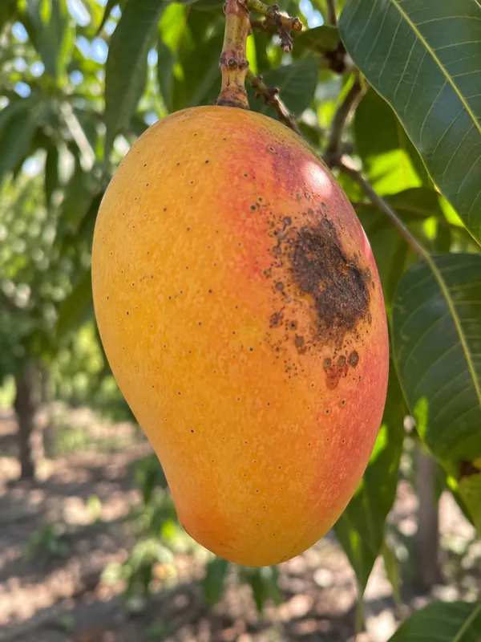
Aspecto aparentemente sano.
No concluyente. Acércate o busca mejor luz.
Posibles signos de daño. Revísalo primero.
Fotos ilustrativas de cómo se marcan los recuadros.
El fruto tenía recuadro rojo al tomar la foto, con imagen suficiente. Evaluación visual experimental.
La foto se guarda con el mismo resultado que viste en pantalla, la hora y las coordenadas del GPS. Si activas la captura automática, guarda sola cuando el recuadro se repite.
Hoy 09:14 · 19.2433° N, 103.7250° O · ±8 m
Registro de ejemplo.
Cada mango con posible daño queda marcado donde lo fotografiaste. Una línea une los puntos en el orden en que tomaste las fotos, para que vuelvas directo al árbol.
Úsala aunque no tengas señal.
Mapa ilustrativo. La app usa mapas de OpenStreetMap que puedes descargar para tu zona.
La detección, el GPS y el historial funcionan dentro del teléfono. Solo necesitas internet para crear tu cuenta y, si quieres, para descargar el mapa de tu zona. Tus fotos y ubicaciones no salen de tu teléfono, salvo que tú las compartas.
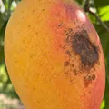
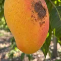
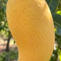
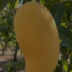
Solo separa el aspecto aparentemente sano de los posibles signos de daño. No dice de qué se trata.
Un daño por dentro, o del lado que no salió en la foto, no se puede ver.
El modelo es experimental y falta probarlo con más fotos de huerta. Úsalo como apoyo, no como veredicto.
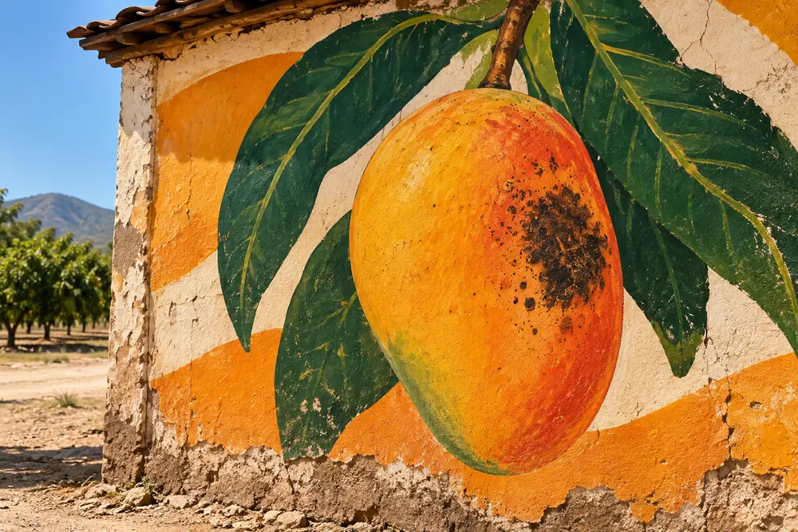
Solo para crear tu cuenta y entrar la primera vez. Después detecta y guarda sin señal. Si quieres el mapa de tu zona, lo descargas una vez con Wi‑Fi.
Los primeros 30 días son gratis y no pedimos tarjeta. Después cuesta $79 al mes, sin plazo forzoso. Se renueva escribiéndonos por WhatsApp al 312 271 2212.
En tu teléfono, dentro de la app. Puedes compartir un registro o exportarlos todos en un ZIP. Si desinstalas la app se borran, así que exporta antes.
Todavía lo estamos midiendo con mangos reales. Por eso el resultado habla de «posibles» signos de daño y no de certezas.
Por ahora solo hay versión para Android 8.0 o superior.
Porque AgroCam todavía no está en Play Store y se instala desde esta página. Descárgala solo de agrocam-web.vercel.app. Si quieres comprobar que el archivo es el original, compara su huella SHA‑256 con la que aparece junto al botón de descarga.
El botón espera a que el teléfono esté quieto, haya luz suficiente y el recuadro se mantenga sobre el fruto. Así la foto guardada coincide con lo que evaluó la app.
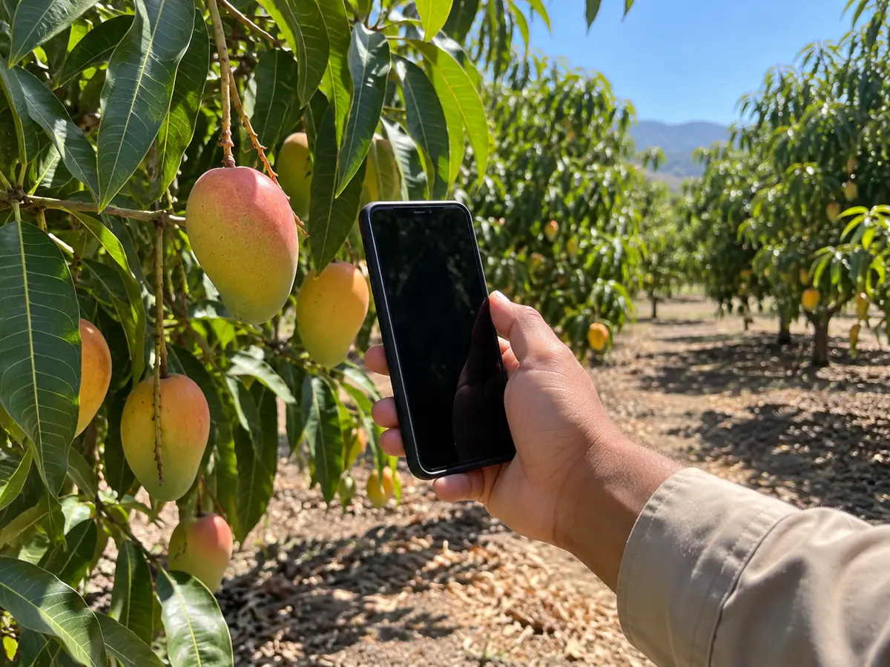
Instala la versión de prueba, crea tu cuenta y usa AgroCam 30 días gratis. Cuéntanos qué viste: tus comentarios nos ayudan a mejorar el modelo.
Android 8.0 o superior
Huella SHA‑256 del archivo